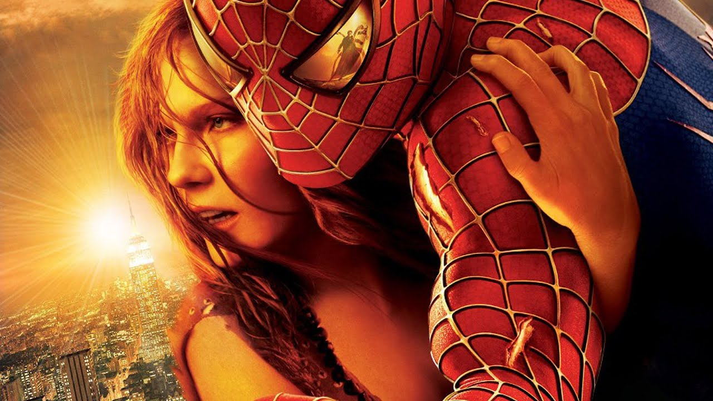

Sinopse:
Quando uma falha na experiência de fusão nuclear resulta em uma explosão que mata sua esposa, o Dr. Otto Octavius é transformado em Dr. Octopus, um ciborgue com tentáculos de metal. Doc Ock culpa o Homem-Aranha pelo acidente e quer vingança. Enquanto isso, o alter ego do herói, Peter Parker, perde seus poderes. Para complicar as coisas, o seu melhor amigo odeia o Homem-Aranha e sua amada fica noiva.
- Data de lançamento: 2 de julho de 2004
- Animadores: Peter Parker, Mary Jane Watson e Harry Osborn
- Gênero: Ação; aventura; ficção; científica
- Produtoras: Marvel Entertainment; Sony Pictures Entertainment; Marvel Studio; Laura Ziskin Productions
- Distribuidora: Columbia Pictures
